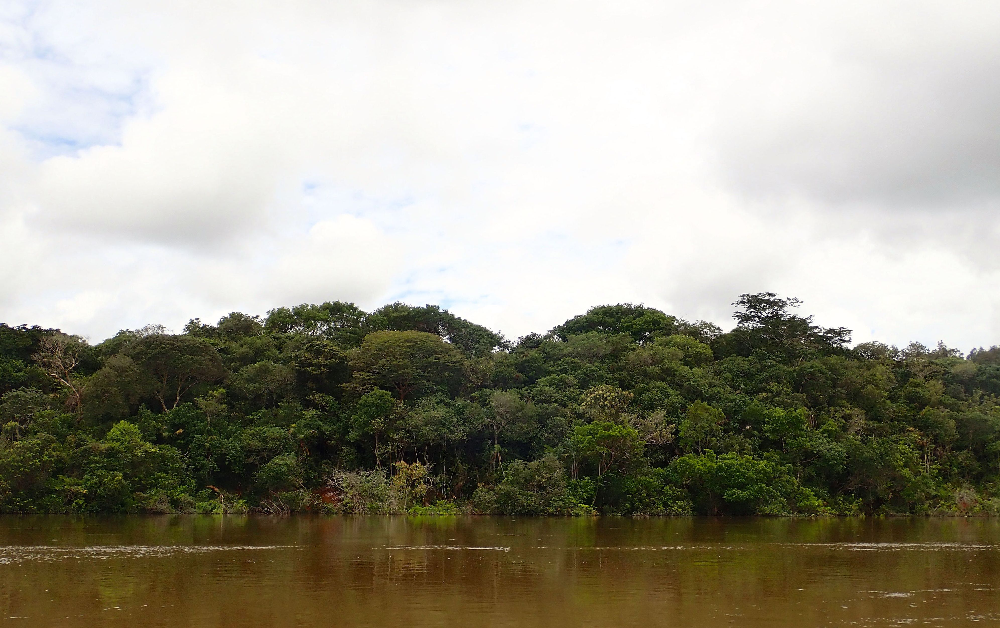
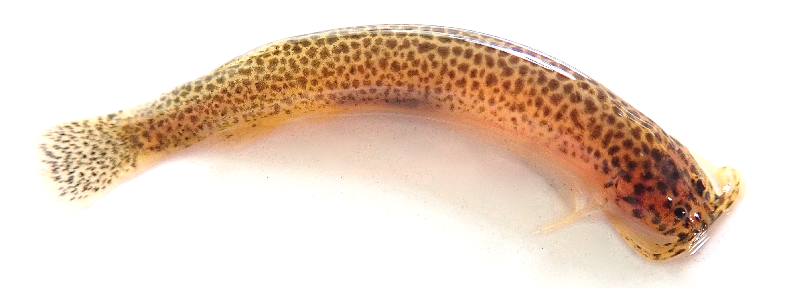
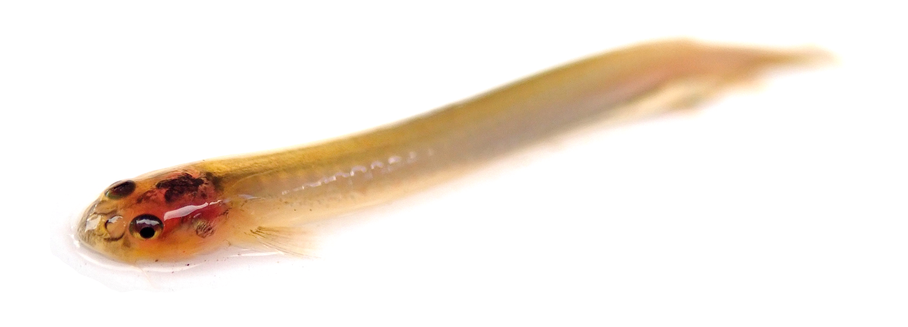

Articles
57. Alda, F., Alter, S. E., Kurata, N. P., Chakrabarty, P., & Stiassny, M. L. J. (2025). Phylogenomic and population genomic analyses of ultraconserved elements reveal deep coalescence and introgression shaped diversification patterns in lamprologine cichlids of the Congo River. Systematic Biology, 74(4), 600–621. doi:10.1093/sysbio/syaf032
56. Alda, F., Mendoza-Franco, E. F., Hanson-Regan, W., Reina, R. G., Bermingham, E., & Torchin, M. E. (2025). Geography is a stronger predictor of diversification of monogenean parasites (Platyhelminthes) than host relatedness in characin fishes of Middle America. PLoS ONE, 20(4), e0316974. doi:10.1371/journal.pone.0316974
55. Hanson‐Regan, W., Leasi, F., & Alda, F. (2025). Geographical, ecological, and genetic drivers of gut microbial diversity in native and invasive minnows (Leuciscidae: Cyprinella). Molecular Ecology, 34(18), e70011. doi:10.1111/mec.70011
54. Jimenez, S. M., Kurata, N. P., Stiassny, M. L. J., Alter, S. E., Chakrabarty, P., & Alda, F. (2025). Novel complete mitochondrial genomes of eight riverine Lamprologus species (Actinopterygii, Cichlidae) suggest in-situ speciation of the blind cichlid L. Lethops in the lower Congo River. Mitochondrial DNA Part B, 10(7), 595–601. doi:10.1080/23802359.2025.2519212
53. Saltonstall, K., Collin, R., Aguilar, C., Alda, F., Baldrich-Mora, L. M., Bravo, V., Castillo, M. F., Castro, S., De León, L. F., Díaz-Ferguson, E., Garcés, H. A., Gómez, E., González, R. G., González-Torres, M. A., Guzman, H. M., Hiller, A., Ibáñez, R., Jaramillo, C., Kaiser, K. L., … Castellanos-Galindo, G. (2025). A DNA barcode dataset for the aquatic fauna of the Panama Canal: Novel resources for detecting faunal change in the Neotropics. Data, 10(7), 108. doi:10.3390/data10070108
52. De La Hera, I., Alda, F., Ancin, L., Barba, E., Butroe Jauregi, J., Castro, A., Cevidanes, A., Galicia, D., Gosá, A., Elosegi, A., Herrero-Jáuregui, C., Hilario, A., Ibáñez, R., Leorri, E., Martín, B., Olariaga, I., Torres-Sánchez, M., & Webster, B. (2024). Munibe cumple 75 años: Una visión desde la sección de ciencias naturales. Munibe Ciencias Naturales. Munibe, 72, 7-19. doi:10.21630/mcn.2024.72.13
51. Domínguez, J. C., Alda, F., Calero-Riestra, M., Olea, P. P., Martínez-Padilla, J., Herranz, J., Oñate, J. J., Santamaría, A., Viñuela, J., García, J. T. (2023) Genetic footprints of a rapid and large-scale range expansion: the case of cyclic common vole in Spain. Heredity, 130, 381-393. doi:10.1038/s41437-023-00613-w
50. Elías, D. J., McMahan, C. D., Alda, F., García-Alzate, C., Hart, P. B., & Chakrabarty, P. (2023). Phylogenomics of trans-Andean tetras of the genus Hyphessobrycon Durbin 1908 (Stethaprioninae: Characidae) and colonization patterns of Middle America. PLoS ONE, 18(1), e0279924. doi:10.1371/journal.pone.0279924
49. Snead, A., Alda, F. 2022. Time-series sequences for evolutionary inferences. Integrative and Comparative Biology 62: 1771-1783. doi:10.1093/icb/icac146
48. Hart, P. B., Arnold, R. J., Alda, F., Pietsch, T. W., Kenaley, C. P., Hutchinson, D., Chakrabarty, P. (2022). The evolutionary relationships of anglerfishes (Lophiiformes) reconstructed using ultraconserved elements. Molecular Phylogenetics and Evolution, 171, 107459. doi:10.1016/j.ympev.2022.107459
47. Alda, F., Ludt, W. B., Elías, D. J., McMahan, C. D., & Chakrabarty, P. (2021). Comparing ultraconserved elements and exons for phylogenomic analyses of Middle American cichlids: When data agree to disagree. Genome Biology and Evolution, 13(8), evab161. doi:10.1093/gbe/evab161
46. García, J., Morán‐Ordóñez, A., García, J. T., Calero‐Riestra, M., Alda, F., Sanz, M., Suárez-Seoane, S. (2021). Current landscape attributes and landscape stability in breeding grounds explain genetic differentiation in a long‐distance migratory bird. Animal Conservation, 24: 120-134. doi:10.1093/gbe/evab161
45. Rossi, N. A., Menchaca-rodriguez, A., Antelo, R., Wilson, B., Mclaren, K., Mazzotti, F., Crespo, R., Wasilewski, J., Alda, F., Doadrio, I., Barrios, T. R., Hekkala, E., Alonso-Tabet, M., Alonso-Giménez, Y., Lopez, M., Espinosa-Lopez, G., Burgess, J., Thorbjarnarson, J. B., Ginsberg, J. R., … Amato, G. (2020). High levels of population genetic differentiation in the American crocodile (Crocodylus acutus). PLoS ONE, 15(7), e0235288. doi:10.21203/rs.2.16265/v1
44. García, J. T., Domínguez-Villaseñor, J., Alda, F., Calero-Riestra, M., Pérez Olea, P., Fargallo, J. A., Martínez-Padilla, J., Herranz, J., Oñate, J. J., Santamaría, A., Motro, Y., Attie, C., Bretagnolle, V., Delibes, J., & Viñuela, J. (2020). A complex scenario of glacial survival in Mediterranean and continental refugia of a temperate continental vole species (Microtus arvalis) in Europe. Journal of Zoological Systematics and Evolutionary Research, 58(1), 459–474. doi:10.1111/jzs.12323
43. Faircloth, B. C., Alda, F., Hoekzema, K., Burns, M. D., Oliveira, C., Albert, J. S., Melo, B. F., Ochoa, L. E., Roxo, F. F., Chakrabarty, P., Sidlauskas, B. L., & Alfaro, M. E. (2020). A target enrichment bait set for studying relationships among ostariophysan fishes. Copeia, 108(1), 47–60. doi:10.1643/CG-18-139
42. Moody, E. K., Alda, F., Capps, K. A., Puebla, O., & Turner, B. L. (2019). Trophic trait evolution explains variation in nutrient excretion stoichiometry among Panamanian armored catfishes (Loricariidae). Diversity, 11(6), 88–88. doi:10.3390/d11060088)
41. Alda, F., Tagliacollo, V. A., Bernt, M. J., Waltz, B. T., Ludt, W. B., Faircloth, B. C., Alfaro, M. E., Albert, J. S., & Chakrabarty, P. (2019). Resolving deep nodes in an ancient radiation of neotropical fishes in the presence of conflicting signals from incomplete lineage sorting. Systematic Biology, 68(4), 573–593. doi:10.1093/sysbio/syy085
40. Schönhuth, S., Gagne, R., Alda, F., Neely, D., Mayden, R., & Blum, M. (2018). Phylogeography of the widespread creek chub Semotilus atromaculatus (Cypriniformes: Leuciscidae). Journal of Fish Biology, 93(5), 778–791. doi:10.1111/jfb.13778
39. Alda, F., Adams, A. J., Chakrabarty, P., & McMillan, W. O. (2018). Mitogenomic divergence between three pairs of putative geminate fishes from Panama. Mitochondrial DNA Part B: Resources, 3(1), 1–5. doi:10.1080/23802359.2017.1413288
38. Burress, E. D., Alda, F., Duarte, A., Loureiro, M., Armbruster, J. W., & Chakrabarty, P. (2018). Phylogenomics of pike cichlids (Cichlidae: Crenicichla): The rapid ecological speciation of an incipient species flock. Journal of Evolutionary Biology, 31(1), 14–30. doi:10.1111/jeb.13196
37. Gagne, R. B., Sprehn, C. G., Alda, F., Mcintyre, P. B., Gilliam, J. F., & Blum, M. J. (2017). Invasion of the Hawaiian Islands by a parasite infecting imperiled stream fishes. Ecography, 41(3), 528–539. doi:10.1111/ecog.02855
36. Alda, F., Adams, A. J., McMillan, W. O., Chakrabarty, P. (2017). Complete mitochondrial genomes of three Neotropical sleeper gobies: Eleotris amblyopsis, Eleotris picta and Hemieleotris latifasciata. Mitochondrial DNA Part B, 2, 747-750. doi:10.1080/23802359.2017.1390412
35. Moody, K. N., Gagne, R. B., Heim-Ballew, H., Alda, F., Hain, E. F., Lisi, P. J., Walter, R. P., Higashi, G. R., Hogan, J. D., McIntyre, P. B., Gilliam, J. F., & Blum, M. J. (2017). Invasion hotspots and ecological saturation of streams across the Hawaiian archipelago. Cybium, 41(2), 528–539. doi:10.26028/cybium/2017-412-006
34. Chakrabarty, P., Faircloth, B. C., Alda, F., Ludt, W. B., McMahan, C. D., Near, T. J., Dornburg, A., Albert, J. S., Arroyave, J., Stiassny, M. L. J., Sorenson, L., & Alfaro, M. E. (2017). Phylogenomic systematics of Ostariophysan fishes: Ultraconserved elements support the surprising non-monophyly of Characiformes. Systematic Biology, 66(6), 881–895. doi:10.1093/sysbio/syx038
33. Peterson, A. C., Ghersi, B. M., Alda, F., Firth, C., Frye, M. J., Bai, Y., Osikowicz, L. M., Riegel, C., Lipkin, W. I., Kosoy, M. Y., & Blum, M. J. (2017). Rodent-borne Bartonella infection varies according to host species within and among cities. EcoHealth, 14(4), 771–782. doi:10.1007/s10393-017-1291-4
32. Le Pendu, J., Abrantes, J., Bertagnoli, S., Guitton, J.-S., Le Gall-Reculé, G., Lopes, A. M., Marchandeau, S., Alda, F., Almeida, T., Célio, A. P., Bárcena, J., Burmakina, G., Blanco, E., Calvete, C., Cavadini, P., Cooke, B., Dalton, K., Mateos, M. D., Deptula, W., … Esteves, P. (2017). Proposal for a unified classification system and nomenclature of lagoviruses. Journal of General Virology, 98(7), 1658–1666. doi:10.1099/jgv.0.000840
31. Alda, F., Gagne, R. B., Walter, R. P., Hogan, J. D., Moody, K. N., Zink, F., Mcintyre, P. B., Gilliam, J. F., & Blum, M. J. (2016). Colonization and demographic expansion of freshwater fauna across the Hawaiian Archipelago. Journal of Evolutionary Biology, 29(10), 2054–2069. doi:10.1111/jeb.12929
30. Picq, S., Alda, F., Bermingham, E., & Krahe, R. (2016). Drift-driven evolution of electric signals in a Neotropical knifefish. Evolution, 70(9), 2134–2144. [doi:10.1111/evo.13010] (https://doi.org/10.1111/evo.13010)
29. Strobel, H. M., Alda, F., Sprehn, C. G., Blum, M. J., & Heins, D. C. (2016). Geographic and host-mediated population genetic structure in a cestode parasite of the three-spined stickleback. Biological Journal of the Linnean Society, 119(2), 381–396.doi:10.1111/bij.12826
28. Galván-Quesada, S., Doadrio, I., Alda, F., Perdices, A., Reina, R. G., García Varela, M., Hernández, N., Mendoza, A. C., Bermingham, E., & Domínguez-Domínguez, O. (2016). Molecular phylogeny and biogeography of the amphidromous fish genus Dormitator Gill 1861 (Teleostei: Eleotridae). PLoS ONE, 11(4), e0153538–e0153538.doi:10.1371/journal.pone.0153538
27. Glotzbecker, G. J., Alda, F., Broughton, R. E., Neely, D. A., Mayden, R. L., & Blum, M. J. (2016). Geographic independence and phylogenetic diversity of red shiner introductions. Conservation Genetics, 17(4), 795–809.doi:10.1007/s10592-016-0822-9
26. Rossi Lafferriere, N. A., Antelo, R., Alda, F., Mårtensson, D., Hailer, F., Castroviejo-Fisher, S., Ayarzagüena, J., Ginsberg, J. R., Castroviejo, J., Doadrio, I., Vilá, C., & Amato, G. (2016). Multiple paternity in a reintroduced population of the Orinoco crocodile (Crocodylus intermedius) at the El Frío Biological Station, Venezuela. PLoS ONE, 11(3), e0150245–e0150245.doi:10.1371/journal.pone.0150245
25. Rocha, G., Alda, F., Pagés, A., & Merchán, T. (2017). Experimental transmission of rabbit haemorrhagic disease virus (RHDV) from rabbit to wild mice (Mus spretus and Apodemus sylvaticus) under laboratory conditions. Infection, Genetics and Evolution, 47, 94–98. doi:10.1016/j.meegid.2016.11.016
24. Bagley, J. C., Alda, F., Breitman, M. F., Bermingham, E., Van Den Berghe, E. P., & Johnson, J. B. (2015). Assessing species boundaries using multilocus species delimitation in a morphologically conserved group of Neotropical freshwater fishes, the Poecilia sphenops species complex (Poeciliidae). PLoS ONE, 10(4), e0121139. doi:10.1371/journal.pone.0121139
23. Calvo, M., Alda, F., Oliverio, M., Templado, J., & Machordom, A. (2015). Surviving the Messinian Salinity Crisis? Divergence patterns in the genus Dendropoma (Gastropoda: Vermetidae) in the Mediterranean Sea. Molecular Phylogenetics and Evolution, 91, 17–26. doi:10.1016/j.ympev.2015.05.004
22. Picq, S., Alda, F., Krahe, R., & Bermingham, E. (2014). Miocene and Pliocene colonization of the Central American Isthmus by the weakly electric fish Brachyhypopomus occidentalis (Hypopomidae, Gymnotiformes). Journal of Biogeography, 41(8), 1520–1532. doi:10.1111/jbi.12309
21. Alda, F., & Doadrio, I. (2014). Spatial genetic structure across a hybrid zone between European rabbit subspecies. PeerJ, 2, e582–e582. doi:10.7717/peerj.582
20. Alda, F., Picq, S., León, L. F. de, González, R., Walz, H., Bermingham, E., & Krahe, R. (2013). First record of Gymnotus henni (Albert, Crampton and Maldonado, 2003) in Panama: Phylogenetic position and electric signal characterization. Check List, 9(3), 655–659. doi: 10.15560/9.3.655
19. Alda, F., Reina, R. G., Doadrio, I., & Bermingham, E. (2013). Phylogeny and biogeography of the Poecilia sphenops species complex (Actinopterygii, Poeciliidae) in Central America. Molecular Phylogenetics and Evolution, 66(3), 1011–1026. doi:10.1016/j.ympev.2012.12.012
18. Alda, F., García, J., García, J. T., & Suárez-Seoane, S. (2013). Local genetic structure on breeding grounds of a long-distance migrant passerine: The bluethroat (Luscinia svecica) in Spain. Journal of Heredity, 104(1), 36–46. doi:10.1093/jhered/ess071
17. Alda, F., González, M. A., Olea, P. P., Ena, V., Godinho, R., & Drovetski, S. V. (2013). Genetic diversity, structure and conservation of the endangered Cantabrian Capercaillie in a unique peripheral habitat. European Journal of Wildlife Research, 59(5), 719–728. doi:10.1007/s10344-013-0727-6
16. Alda, F., Ruiz-López, M. J., García, F. J., Gompper, M. E., Eggert, L. S., & García, J. T. (2013). Genetic evidence for multiple introduction events of raccoons (Procyon lotor) in Spain. Biological Invasions, 15(3), 687–698. doi:10.1007/s10530-012-0318-6
15. Ornelas-García, C. P., Alda, F., Díaz-Pardo, E., Gutiérrez-Hernández, A., & Doadrio, I. (2012). Genetic diversity shaped by historical and recent factors in the live-bearing twoline skiffia Neotoca bilineata. Journal of Fish Biology, 81(6), 1963–1984. doi:10.1111/j.1095-8649.2012.03456.x
14. Calero-Riestra, M., Alda, F., Dávila, J. A., & García, J. T. (2012). Characterization of polymorphic microsatellite loci for the Tawny Pipit Anthus campestris and their utility in other steppe birds. European Journal of Wildlife Research, 58(1), 379–383.doi:10.1007/s10344-011-0580-4
13. Cabezas, P., Alda, F., Macpherson, E., & Machordom, A. (2012). Genetic characterization of the endangered and endemic anchialine squat lobster Munidopsis polymorpha from Lanzarote (Canary Islands): Management implications. ICES Journal of Marine Science, 69(6), 1030–1037. doi:10.1093/icesjms/fss062
12. García, J. T., García, F. J., Alda, F., González, J. L., Aramburu, M. J., Cortés, Y., Prieto, B., Pliego, B., Pérez, M., Herrera, J., & García-Román, L. (2012). Recent invasion and status of the raccoon (Procyon lotor) in Spain. Biological Invasions, 14(7), 1305–1310. doi:10.1007/s10530-011-0157-x
11. Rodríguez, R., Ramírez, O., Valdiosera, C. E., García, N., Alda, F., Madurell-Malapeira, J., Marmi, J., Doadrio, I., Willerslev, E., Götherström, A., Arsuaga, J. L., Thomas, M. G., Lalueza-Fox, C., & Dalén, L. (2011). 50,000 years of genetic uniformity in the critically endangered Iberian lynx. Molecular Ecology, 20(18), 3785–3795. doi:10.1111/j.1365-294X.2011.05231.x
10. Merchán, T., Rocha, G., Alda, F., Silva, E., Thompson, G., Trucios, S. H. de, & Pagés, A. (2011). Detection of rabbit haemorrhagic disease virus (RHDV) in nonspecific vertebrate hosts sympatric to the European wild rabbit (Oryctolagus cuniculus). Infection, Genetics and Evolution, 11(6), 1469–1474. doi:10.1016/j.meegid.2011.05.001
9. Garcia, J. T., Alda, F., Terraube, J., Mougeot, F., Sternalski, A., Bretagnolle, V., & Arroyo, B. (2011). Demographic history, genetic structure and gene flow in a steppe-associated raptor species. BMC Evolutionary Biology, 11(1), 333. doi:10.1186/1471-2148-11-333
8. Alda, F., Gaitero, T., Suárez, M., Merchán, T., Rocha, G., & Doadrio, I. (2010). Evolutionary history and molecular epidemiology of rabbit haemorrhagic disease virus in the Iberian Peninsula and Western Europe. BMC Evolutionary Biology, 10(1), 347–347. doi:10.1186/1471-2148-10-347
7. Alda, F., Sastre, P., De La Cruz-Cardiel, P. J., & Doadrio, I. (2011). Population genetics of the endangered Cantabrian capercaillie in northern Spain. Animal Conservation, 14(3), 249–260. doi:10.1111/j.1469-1795.2010.00425.x
6. Pedraza-Lara, C., Alda, F., Carranza, S., & Doadrio, I. (2010). Mitochondrial DNA structure of the Iberian populations of the white-clawed crayfish, Austropotamobius italicus italicus (Faxon, 1914). Molecular Phylogenetics and Evolution, 57(1), 327–342. doi:10.1016/j.ympev.2010.06.007
5. Alda, F., Gaitero, T., Suárez, M., & Doadrio, I. (2009). Molecular characterisation and recent evolution of myxoma virus in Spain. Archives of Virology, 154(10), 1659–1670. doi:10.1007/s00705-009-0494-6
4. Alda, F., Inogés, J., Alcaraz, L., Oria, J., Aranda, A., & Doadrio, I. (2008). Looking for the Iberian lynx in central Spain: A needle in a haystack? Animal Conservation, 11(4), 297–305. doi:10.1111/j.1469-1795.2008.00185.x
3. Domínguez-Domínguez, O., Alda, F., León, G. P.-P. de, García-Garitagoitia, J. L., & Doadrio, I. (2008). Evolutionary history of the endangered fish Zoogoneticus quitzeoensis (Bean, 1898) (Cyprinodontiformes: Goodeidae) using a sequential approach to phylogeography based on mitochondrial and nuclear DNA data. BMC Evolutionary Biology, 8(1), 161–161. doi:10.1186/1471-2148-8-161
2. Alda, F., Rey, I., & Doadrio, I. (2007). An improved method of extraction degraded DNA samples from birds and other species. Ardeola, 54(2), 331–334.
1. Domínguez-Domínguez, O., Boto, L., Alda, F., Pérez-Ponce De León, G., & Doadrio, I. (2007). Human impacts on drainages of the Mesa Central, Mexico, and its genetic effects on an endangered fish, Zoogoneticus quitzeoensis. Conservation Biology, 21(1), 168–180. doi:10.1111/j.1523-1739.2006.00608.x

Books & Book Chapters
4. Agudín, S., Alda, F., El Khadir, N., Fernández, M., García, F., Martínez, M., Moreno-Opo, R., Muñoz, J., Oria, J., San Miguel, A., Barrio, S. (2015). Actuaciones para el fomento del conejo de monte (coord. Guil, F.) Real Federación Española de Caza- Fundación CBD-Hábitat, Madrid. 2nd Edition.
3. Agudín, S., Alda, F., El Khadir, N., Fernández, M., García, F., Martínez, M., Moreno-Opo, R., Muñoz, J., Oria, J., San Miguel, A., Barrio, S. (2009). Actuaciones para el fomento del conejo de monte (coord. Guil F) Real Federación Española de Caza- Fundación CBD-Hábitat, Madrid.
2. Alda, F., Gaitero, T., Alcaraz, L., Zardoya, R., Doadrio, I., Suárez, M. (2007). Coevolución de los virus de la mixomatosis y de la enfermedad hemorrágica con el conejo (Oryctolagus cuniculus L., 1758) en la Península Ibérica . In: La investigación en los Parques Nacionales (Eds. Ramírez, L., Asensio, B,), pp. 281-291. Ministerio de Medio Ambiente, Madrid.
1. Alda, F., Doadrio, I., Hernández, M., Muñoz, J., Silvestre, F. (2006). Gestión genética e inmunológica para el manejo de las traslocaciones y reintroducciones de conejo (Oryctolagus cuniculus L., 1758) en España. In: Manual para la gestión del hábitat del lince ibérico (Lynx pardinus Temminck) y de su presa principal, el conejo de monte (Oryctolagus cuniculus L.) (ed. San Miguel, A.), pp. 217-241. Fundación CBD-Habitat, Madrid.
Popular Science
4. Cabezas, P., Alda, F., Mapherson, E., Machordom, A. (2013). Un cangrejo ciego que solamente habita en la Isla de Lanzarote: Caracterización genética y estado de conservación del jameíto. Quercus 326: 36-41.
3. Gaitero, T., Alda, F., Hernández, N., Suárez, M. (2010). Caracterización genética y evolución del virus de enfermedad vírica hemorrágica en conejos silvestres. Laboratorio Veterinario Avelida 52: 1-6.
2. Cunha, C., Carmona, J. A., Gallardo, M., Gonzalez, G., Perea, S., Alda, F., Boto, L., Doadrio, I. (2008). Los peces de la cueva PB-1: ¿Especie en proceso de formación o monstruos condenados a desaparacer?. Bioespeleo 20: 37-39.
1. Virgós, E., Cabezas-Díaz, S., Lozano, J., Doadrio, I., Alda, F. (2006). Confirmada la presencia de lince ibérico en el suroeste de Madrid. Quercus 243: 64.

Datasets
12. Alda, F., Alter, S. E., Kurata, N., Chakrabarty, P., & Stiassny, M. (2025). Data for: Phylogenomic and population genomic analyses of ultraconserved elements reveal deep coalescence and introgression shaped diversification patterns in Lamprologine cichlids of the Congo River. Dryad. https://doi.org/10.5061/dryad.8931zcs13
11. Jimenez, S. M., Kurata, N. P., Stiassny, M. L. J., Alter, S. E., Chakrabarty, P., & Alda, F. (2025). Novel complete mitochondrial genomes of eight riverine Lamprologus species (Actinopterygii, Cichlidae) suggest in-situ speciation of the blind cichlid L. Lethops in the lower Congo River. Zenodo. https://doi.org/10.5281/zenodo.11442789
10. Alda, F., Ludt, W. B., Elías, D. J., McMahan, C. D., & Chakrabarty, P. (2021). Data from: Comparing ultraconserved elements and exons for phylogenomic analyses of Middle American cichlids: When data agree to disagree. Dryad. https://doi.org/10.5061/dryad.1rn8pk0sh
9. Alda, F., Tagliacollo, V. A., Bernt, M. J., Waltz, B. T., Ludt, W. B., Faircloth, B. C., Alfaro, M. E., Albert, J. S., & Chakrabarty, P. (2019). Data from: Resolving deep nodes in an ancient radiation of neotropical fishes in the presence of conflicting signals from incomplete lineage sorting. Dryad. https://doi.org/10.5061/dryad.k57430s
8. Burress, E. D., Alda, F., Duarte, A., Loureiro, M., Armbruster, J. W., & Chakrabarty, P. (2018). Data from: Phylogenomics of pike cichlids (Cichlidae: Crenicichla): the rapid evolution and trophic diversification of an incipient species flock. Dryad. https://doi.org/10.5061/dryad.7qs13
7. Chakrabarty, P., Faircloth, B. C., Alda, F., Ludt, W. B., McMahan, C. D., Near, T. J., Dornburg, A., Albert, J. S., Arroyave, J., Stiassny, M. L. J., Sorenson, L., & Alfaro, M. E. (2017). Data from: Phylogenomic systematics of Ostariophysan fishes: ultraconserved elements support the surprising non-monophyly of Characiformes. Dryad. https://doi.org/10.5061/dryad.n9g60
6. Gagne, R. B., Sprehn, C. G., Alda, F., Mcintyre, P. B., Gilliam, J. F., & Blum, M. J. (2017). Data from: Invasion of the Hawaiian Islands by a parasite infecting imperiled stream fishes. Dryad. (https://doi.org/10.5061/dryad.b9h54)
5. Strobel, H. M., Alda, F., Sprehn, C. G., Blum, M. J., & Heins, D. C. (2016). GData from: eographic and host-mediated population genetic structure in a cestode parasite of the three-spined stickleback. Dryad. https://doi.org/10.5061/dryad.b1c06
4. Alda, F., Gagne, R. B., Walter, R. P., Hogan, J. D., Moody, K. N., Zink, F., Mcintyre, P. B., Gilliam, J. F., & Blum, M. J. (2016). Data from: Colonization and demographic expansion of freshwater fauna across the Hawaiian Archipelago. Dryad. https://doi.org/10.5061/dryad.n21f4
3. Bagley, J. C., Alda, F., Breitman, M. F., Bermingham, E., Van Den Berghe, E. P., & Johnson, J. B. (2015). Data from: Assessing species boundaries using multilocus species delimitation in a morphologically conserved group of Neotropical freshwater fishes, the Poecilia sphenops species complex (Poeciliidae). Dryad. https://doi.org/10.5061/dryad.m1g3v
2. Alda, F., Reina, R. G., Doadrio, I., & Bermingham, E. (2013). Phylogeny and biogeography of the Poecilia sphenops species complex (Actinopterygii, Poeciliidae) in Central America. Dryad. https://doi.org/10.5061/dryad.fb280
1. Cabezas, P., Alda, F., Macpherson, E., & Machordom, A. (2012). Data from: Genetic characterization of the endangered and endemic anchialine squat lobster Munidopsis polymorpha from Lanzarote (Canary Islands): management implications. Dryad. https://doi.org/10.5061/dryad.17s6621t